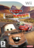
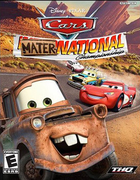

Cars Mater-National Championship |
|
| Tiempo de juego | No Jugado |
| Última actividad | Nunca |
| Añadido | 26/10/2025 14:18:40 |
| Modificado | 14/11/2025 5:58:27 |
| Estado de finalización | Not Played |
| Librería | Playnite |
| Fuente | PORCHE |
| Plataforma | Microsoft Xbox 360 Nintendo DS Nintendo Game Boy Advance Nintendo Wii PC (Windows) Sony PlayStation 2 Sony PlayStation 3 |
| Fecha de lanzamiento | 29/10/2007 |
| Puntuación de la Comunidad | |
| Puntuación de la Crítica | 66 |
| Puntuación de usuario | |
| Género | Racing |
| Desarrollador | Rainbow Studios Tantalus Interactive |
| Editor | THQ |
| Característica | Multiplayer Single-player |
| Enlaces | Wikipedia IMDb MobyGames MobyGames MobyGames |
| Tag | |
Cars Mater-National Championship, or Cars Mater-National for short, is a 2007 racing game published by THQ for the PlayStation 2, PlayStation 3, Xbox 360, Microsoft Windows, Nintendo DS, Game Boy Advance, and Wii. The game is the sequel to the Cars movie tie-in video game.
The game received mixed reviews from critics. A sequel, Cars Race-O-Rama, was released in 2009.
Taking place sometime after the events of the previous game, Cars Mater-National Championship is about the first ever Mater-National Tournament, held in Radiator Springs by Piston Cup Champion Lightning McQueen and his best friend Mater. The player controls McQueen as he races against opponents from around the world, all while overseeing the building of his racing headquarters and the ambitious Radiator Springs racing stadium. In addition to returning characters, there are multiple new characters that appear in the game, many of which come from different countries such as Germany, Italy, England, Sweden, and Japan.
Just like the previous game, Mater-National features three hub-worlds: Radiator Springs, Ornament Valley, and Tailfin Pass - all of which have been redesigned, although certain areas are blocked off and can only be accessed in races.
Cars Mater-National received "mixed or average reviews" on all platforms according to the review aggregation website Metacritic. IGN called the DS version "cute" and "kid-friendly" but never made into 5th gear.